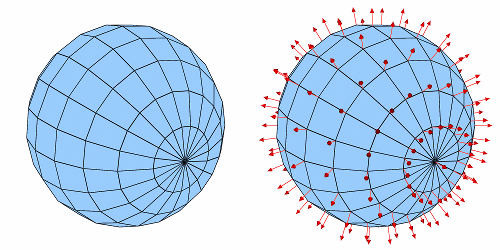

The DeferExpression operator is a special-purpose operator that defers expression execution until later in VisIt's pipeline execution cycle. This means that instead of expression execution taking place before any operators are applied, expression execution can instead take place after operators have been applied.
|  |
| Figure 25 |